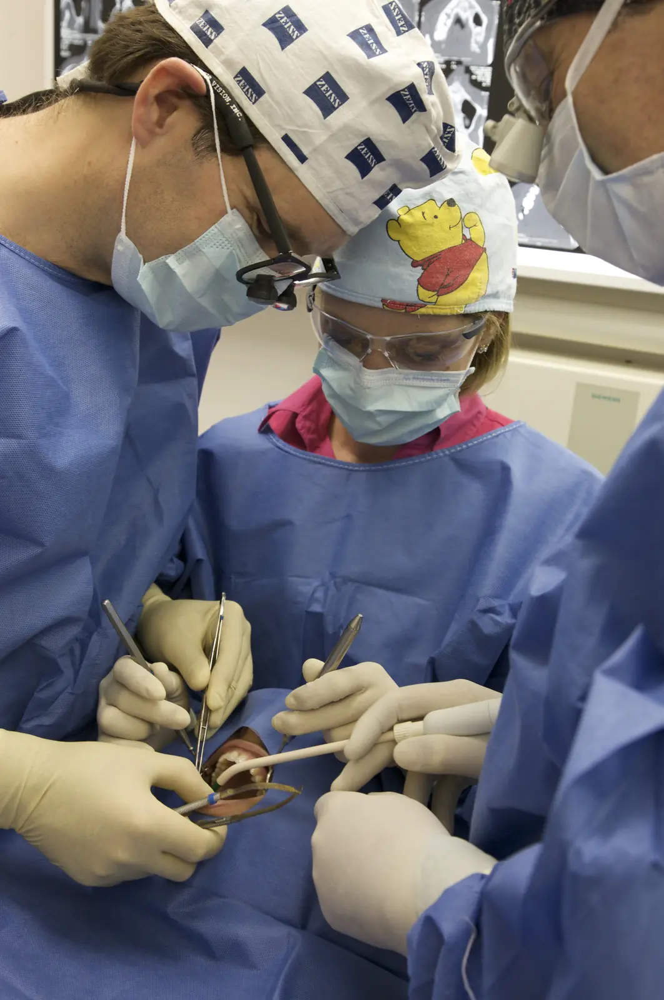

Implantologie
Remplacer une ou plusieurs dents absentes par des implants.
Dr Oliver HanischMaster of Science en implantologie (États-Unis)

Qu’est-ce qu’un implant dentaire ?
Un implant est une petite vis, le plus souvent en titane, placée dans l’os de la mâchoire à la place de la racine d’une dent manquante.
Une fois intégré à l’os, il sert de support à une couronne, à un bridge ou à une prothèse complète. Contrairement à un bridge classique, il ne demande pas de tailler les dents voisines, qui restent intactes.
Les étapes du traitement
Sans greffe osseuse, le traitement s’étend en général sur trois à six mois, de la première consultation à la couronne définitive. Lorsqu’une greffe préalable est nécessaire, il peut durer un an ou davantage.
-
1
La consultation
Examen de la bouche, radiographie panoramique et échange sur vos attentes et vos antécédents médicaux. Le praticien vous présente les options possibles et un devis détaillé.
-
2
L’imagerie 3D et la planification
Un examen en trois dimensions mesure le volume et la qualité de l’os. La position de l’implant est définie à l’avance, à partir de ces images.
-
3
La pose de l’implant
L’intervention a lieu au bloc opératoire, sous anesthésie locale. Pour un implant, elle dure en général moins d’une heure.
-
4
La cicatrisation
L’implant s’intègre à l’os en deux à six mois selon les cas. Pendant cette période, une dent provisoire peut être portée.
-
5
La pose de la couronne
Une empreinte est réalisée, puis la couronne définitive est fixée sur l’implant. Sa teinte est choisie pour s’accorder aux dents voisines.
-
6
Le suivi
Des contrôles réguliers et une hygiène soigneuse, comme pour des dents naturelles, favorisent la longévité de l’implant.
En savoir plus
Chaque étape et chaque technique expliquée en détail.
- L’implant dentaire Ce qu’est un implant, de quoi il est fait et ce qu’il permet de remplacer. En savoir plus
- Le déroulement de la pose Chaque étape en détail, de la première consultation à la couronne définitive. En savoir plus
- Greffe osseuse et sinus lift Reconstituer le volume d’os lorsqu’il est insuffisant pour poser un implant. En savoir plus
- Chirurgie guidée Poser l’implant à l’aide d’un guide conçu à partir de l’imagerie en trois dimensions. En savoir plus

Votre praticien
Dr Oliver Hanisch
- Docteur en chirurgie dentaire (Allemagne)
- Master of Science en implantologie (États-Unis)
- Titre de spécialiste en prothèse obtenu en Allemagne
Les poses d’implants ont lieu au bloc opératoire du cabinet, une salle réservée à la chirurgie. La couronne ou la prothèse posée sur l’implant est réalisée en lien avec les praticiens du cabinet qui assurent la partie prothétique.
Questions fréquentes
La pose d’un implant est-elle douloureuse ?
L’intervention se fait sous anesthésie locale, ce qui la rend en principe indolore. Les jours suivants, une gêne ou un gonflement sont possibles ; ils se soulagent avec les médicaments prescrits.
Combien de temps dure un implant ?
Bien entretenu et contrôlé régulièrement, un implant peut durer de nombreuses années. L’hygiène quotidienne et le suivi au cabinet comptent autant que la pose.
Tout le monde peut-il recevoir un implant ?
Dans la plupart des cas, oui, une fois la croissance terminée. Certaines situations demandent une préparation ou des précautions particulières : un manque d’os, un diabète mal équilibré, certains traitements contre l’ostéoporose, une radiothérapie de la tête et du cou. Chez les patients traités par bisphosphonates ou dénosumab pour un cancer, les implants sont en principe contre-indiqués. Le tabac augmente le risque d’échec. Ces points sont évalués lors de la consultation.
Les implants sont-ils remboursés ?
L’implant lui-même n’est en général pas pris en charge par l’Assurance maladie. La couronne posée dessus peut l’être en partie, et de nombreuses mutuelles participent. Un devis détaillé vous est remis avant tout traitement.
Un premier rendez-vous pour faire le point
Lors de la consultation, le praticien examine votre situation, vous explique les options possibles et vous remet un devis détaillé.